Called the greatest engineering feat of the 21st century, the Great Lakes Pipeline was once hailed as the solution to the Water Crisis facing the American West.
Yet only three decades after its completion, the pipeline’s future is uncertain.
The Life and Death of the Great Lakes Pipeline
All of this was predicated on a pipe 305 feet in diameter and a pumping system capable of moving 203 million gallons of water per minute at the velocity of an industrial pressure washer.
This system ended a contentious era when the Great Lakes states stood accused of hording vast supplies of fresh water as the rest of the country succumbed to drought.
"Our nation is on the cusp of a new era. This pipeline will unlock American excellence by finally ensuring the nation's water wealth is equitably shared," said United States President Ava Rodrigo on the pipeline's first day of operation
on July 24, 2062.
That water—which has sustained the nation's desert cities for three decades—became a mirage Tuesday when Aquannect announced the pipeline’s first-ever emergency shutoff.
 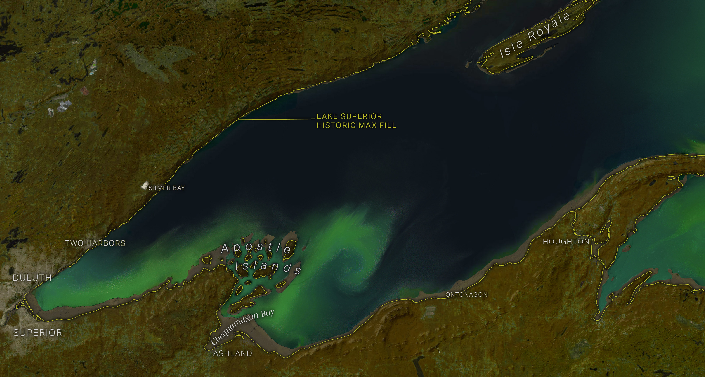
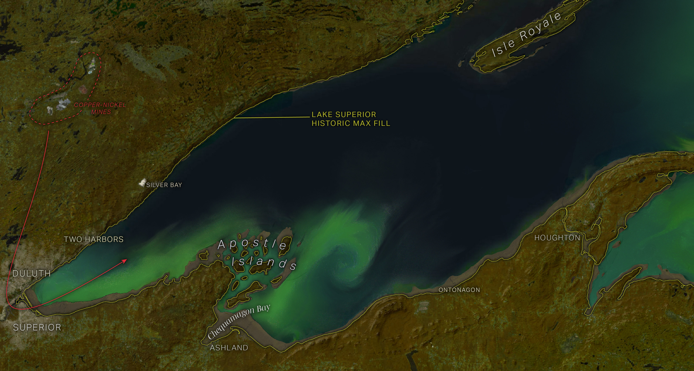
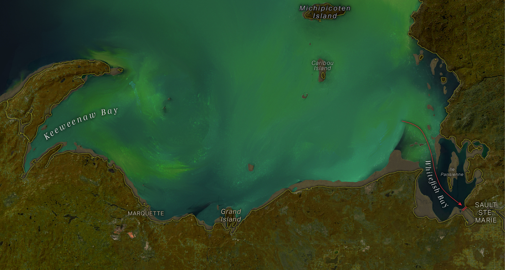
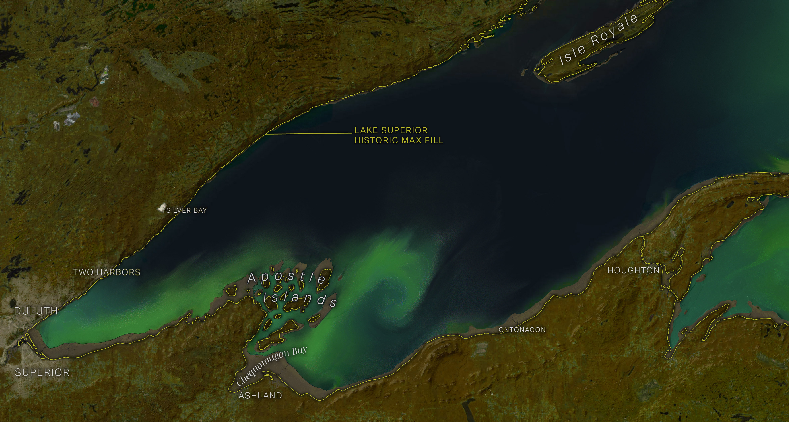
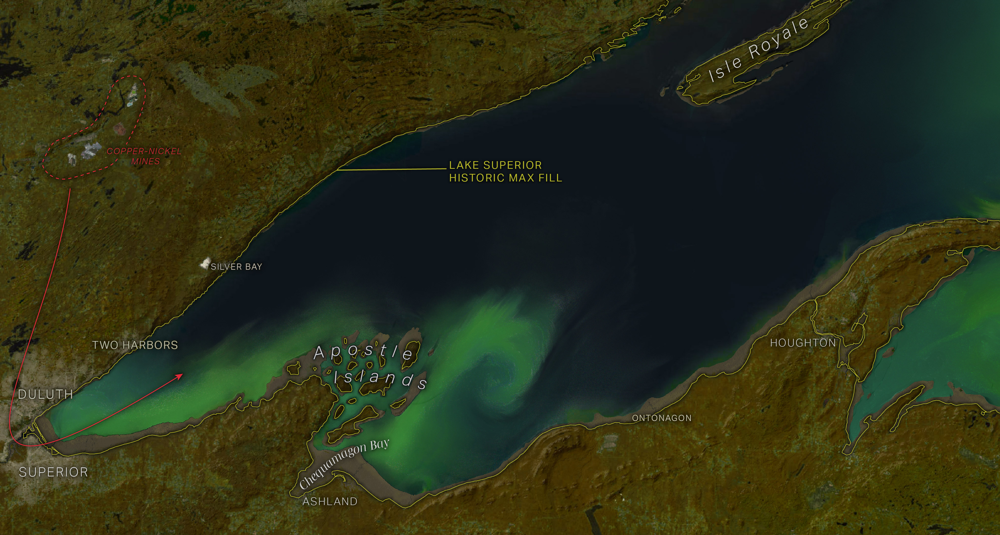
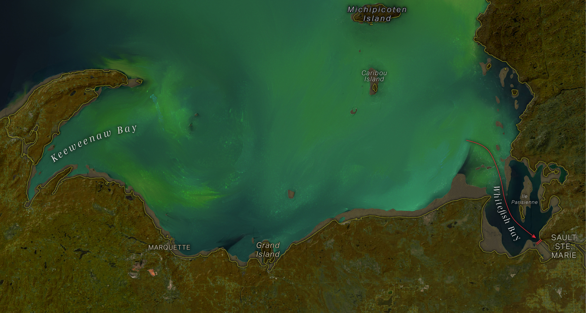

 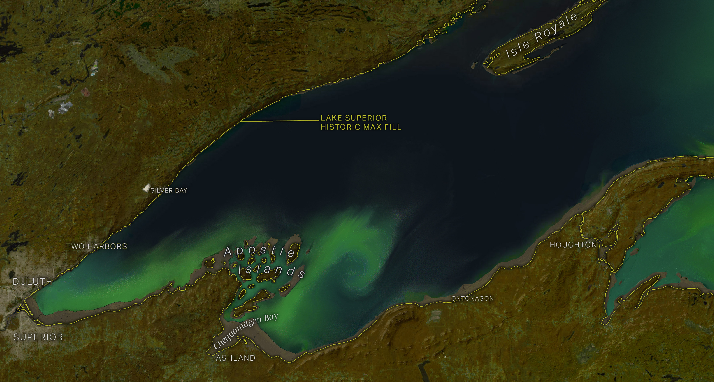
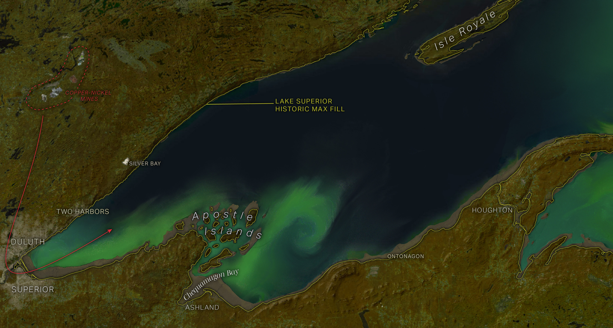
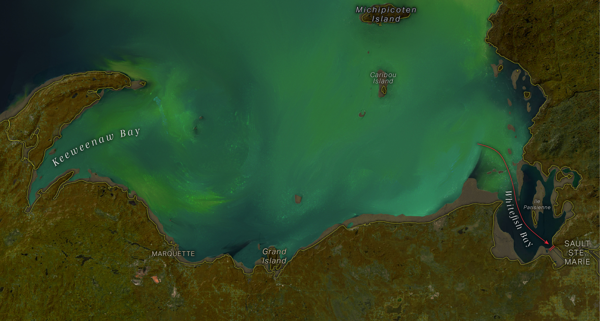
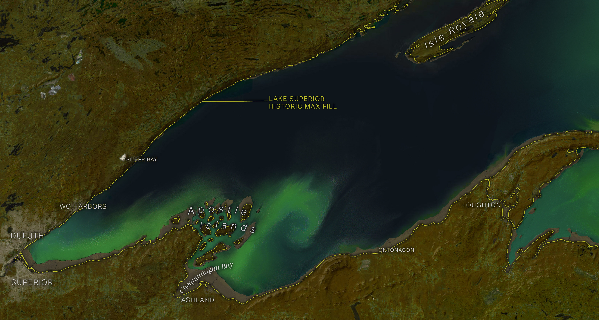
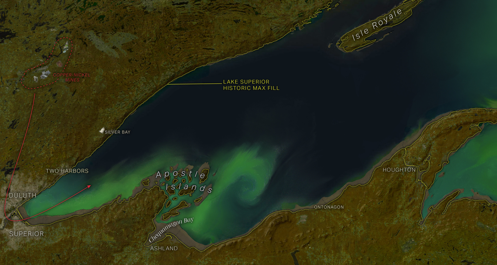
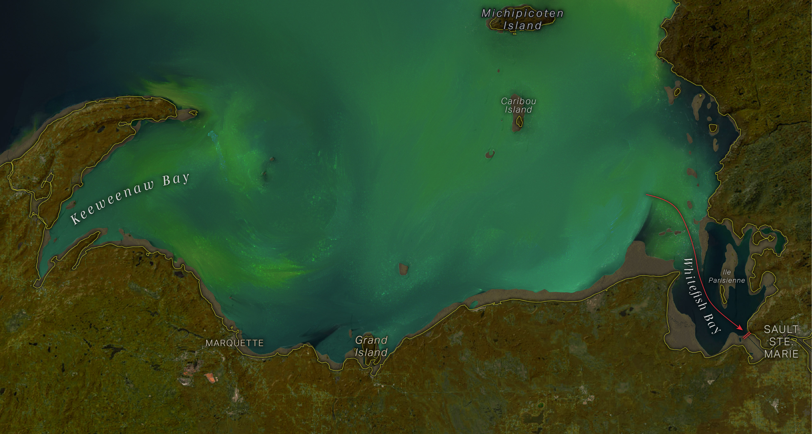
The pipeline is the latest victim of the decade-long megadrought gripping the Upper Midwest, which intensified this summer with record heat waves. Lake Superior has dropped 80 feet below its pre-pipeline level—a loss of an estimated 530 trillion gallons of water. That has left the lake well below the intake threshold for the pipeline's Mesabi Pumping Station in Superior, Wisconsin.
“They chose Lake Superior for the pipeline’s supply because they thought its aquatic wealth was inexhaustible, especially compared to its downstream siblings,” said pipeline historian Martha Grunig. “It turns out the lake was far more vulnerable than anyone thought.”
The lake level had been dropping steadily since 2084, when intensive pumping and water exports began to extract more from the lake than nature and regional water diversions could replace.
As if to add insult to injury, the lake has been plagued by a series of toxic algal blooms throughout the summer, imperiling drinking water supplies and tanking regional tourism.
The timing couldn’t be worse for the region’s economy.
Mines in northern Minnesota hold the key to nearly all the nation’s remaining nickel, copper and cobalt—minerals that were critical to the clean energy transition of the past century. Those minerals continue to be the foundation of the nation’s battery production.
Nearly all those minerals leave the region by way of freighters loaded in the Twin Ports of Duluth and Superior. The government has spent over $10 billion dredging a canal to keep the harbor navigable as the lake level has fallen.
“The past century has been good to Duluth. The pipeline and the mining have been huge for our economy. We’ve been blessed with a far more stable climate than other parts of the country and that’s been a huge factor in our growth,” said Duluth mayor Erik Solversen. “But so goes the lake, so goes our city—and the lake isn’t doing so well.”
The lake level has dropped below the point needed to operate the lock at Sault Ste. Marie, leaving the freighters no way to reach Lake Huron and the markets beyond.
In response to questions about the pipeline’s future and impact on lake levels, an Aquannect spokesAI said the company has no comment at this time. Cities across the West have put into place drought contingency plans and plan to initiate major water cuts in the coming months.
“In some ways this brings us back to pre-pipeline times,” said Xiong, the water economist. “A timeout for water exports may be just what the lake needs to replenish naturally. But I don’t think this is the end of the pipeline by any stretch of the imagination. When you hinge entire economies on a massive system like that, it’s impossible to turn back the clock.”
Map and story by Jake Steinberg.
This page isn't ready to be viewed on mobile yet. Please come back on a desktop device.